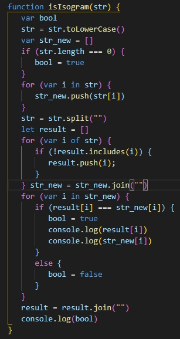

I am 19 years old. I am studying at university. I have the desire and ability to learn something new
and I think this is the most important thing. My best 3 qualities are punctuality, responsibility and
independence. Of weak qualities I am not very well-read: at school I did not like to read. But now I read
different articles about programming, documentation, book about algorithms. I like to solve problems, to
look for other ways to solve problems. For me, my interest has become closer to frontend development. I was
and am always interested in how sites are developed, specifically the client side: what the user sees, how
elements are arranged, animation using js. That's why I want to learn all the necessary skills in a company
to work there. The most important thing is the desire.
Skills
Javascript(Medium)
HTML(above medium)
CSS(above medium)
SCSS,SASS
NodeJs(Basic)
Git(Basic)
SQL(Medium)
C++(Medium)
Example code

Education
I am a third-year student at Baranovichi State University.
I've been watching courses on Javascript, HTML and CSS on various YouTube channels. I read the tutorial
https://learn.javascript.ru/ about JS
English level
I have an A1 level of English on the EPAM test, but I can talk about some English topics and I am ready to
learn, I also read educational articles on English. Taking many steps forward to improve my English.
 Javascript(Medium)
Javascript(Medium) HTML(above medium)
HTML(above medium) CSS(above medium)
CSS(above medium) SCSS,SASS
SCSS,SASS NodeJs(Basic)
NodeJs(Basic) Git(Basic)
Git(Basic) SQL(Medium)
SQL(Medium) C++(Medium)
C++(Medium)